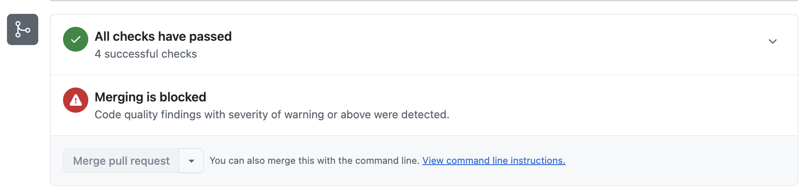

Identify and resolve a code quality or coverage threshold block on your pull request so you can merge your changes.
Repository administrators and organization owners can set quality gates using GitHub Code Quality. When you open a pull request, checks automatically run to evaluate your changes against these standards.
There are two types of blocks:
These checks help maintain a healthy, maintainable codebase and prevent technical debt from accumulating.
If your pull request introduces code that falls below the required quality threshold, you'll see a merge block banner at the bottom of the pull request in the "Checks" section: "Merging is blocked: Code quality findings were detected."

The quality gate set by your repository administrator or organization owner defines the minimum severity level that will block merging. All findings at that severity level or higher must be fixed or dismissed before you can merge. If the merge block banner does not specify a severity level, your repository requires all findings to be addressed.
To unblock your pull request, you need to fix or dismiss the findings that meet or exceed the blocking severity:
github-code-quality[bot] on your pull request. Each comment is labeled by severity (Error, Warning, Note).If your pull request is blocked by a coverage threshold rule, you'll see a merge block banner in the "Checks" section with a message describing which threshold was not met. For example:
To unblock your pull request, you need to add or modify tests so that more lines of the codebase are executed: